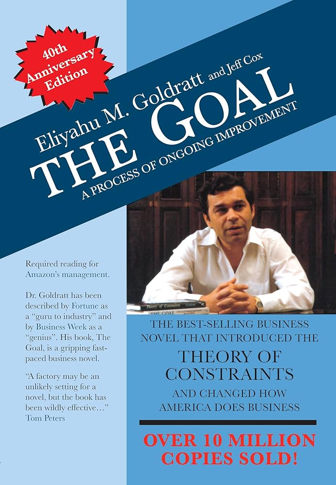

My Git Workflow
This is my preferred Git workflow for projects.
This is my preferred Git workflow for projects.
A comparison of two memory compression techniques in Linux, which aim to be faster than just using swap, and also reduce writes to swap.
Toward the end of 2024, a new type of language model was released: the Large Reasoning Model, or LRM. Examples include OpenAI's o1, Qwen's QwQ and Deepseek's R1. Unlike traditional Large Language Models (LLMs), these models improve their accuracy by performing test-time compute, generating long reasoning chains before outputting their answer.
In the prior discussion on the measures of intelligence, the intelligence of a system is defined as its skill-acquisition efficiency, when given a set of priors and experience. A more intelligent system would end up with greater skill after undergoing a similar amount of experience as a less intelligent system. In essence, this is the measure of the generalization ability of the system in a particular domain.
This article is an exploration into whether LRMs and the method of generating reasoning chains represent a path toward higher intelligence as defined above.
These three books are part of a series on DevOps, the first two through an engaging story about how the protagonists turn around a failing company by reducing lead times for deployments.
One of the companies I worked for had an uncanny resemblance to the events described in the books (particularly The Unicorn Project).

This is a book primarily about plant management/supply chain management, but the lessons and concepts translate well to other fields e.g. software development.
Logging is an often overlooked part of software development, and something I have been neglecting only up till recently. In this post, I compare several logging frameworks.
Some notes on how I setup Moonlight to auto-launch on a Raspberry Pi 4, as well as random display/audio issues.
Sometimes your laptop might run too hot and you want to reduce the temperatures.
Apart from cleaning the fans and changing the thermal paste, there are 2 software options available to you.
I recently listened to the audiobook for the above, and here are my notes (mostly from the last few chapters).
This is my summary of the book Thinking, Fast and Slow by Daniel Kahneman, which I read in March 2024.
I mainly describe the cognitive heuristics, biases and fallacies with examples here.